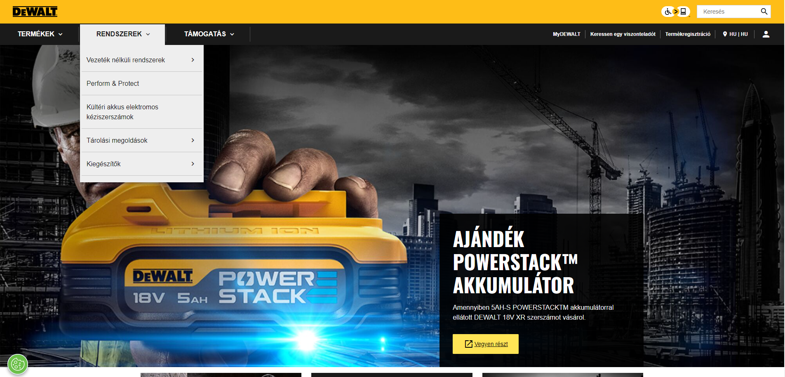

A Milwaukee Electric Tool Corporation, ismertebb nevén Milwaukee Tool, egy multinacionális vállalat, amely elektromos szerszámokat, kéziszerszámokat, szerszámtartozékokat, szerszámtárolókat és egyéni védőeszközöket fejleszt, gyárt és forgalmaz.
A DeWalt Industrial Tool Company egy amerikai, világszerte működő elektromos szerszámok és kéziszerszámok gyártója az építőiparban , a gyártásban és a fafeldolgozó iparban, valamint háztartási kézművesek számára. A DeWalt a Black & Decker (US) Inc., a Stanley Black & Decker leányvállalatának bejegyzett védjegye .
Az ESAB, Elektriska Svetsnings-Aktiebolaget svéd ipari vállalat. Hegesztő és vágó berendezéseket értékesít. A társaságot Oscar Kjellberg alapította. A göteborgi cég 1904-ben úttörője volt a kézi fém ívhegesztő elektródák fejlesztésének.
A TRAKIS-HETRA Kft 1991. január 1-én jogutódlással jött létre. Jogelődjét az 1951-es bejegyzésű TRAKIS Szövetkezet alapította kereskedelmi és szerviz tevékenységre. Ebből következően az átalakulás csak a cég formáját, illetve tulajdonosi körét értintette. A fő profil továbbra is az elmúlt több mint ötven évben már jól bevált termékekből tevődik össze, mint transzformátorok és hegesztőgépek, valamint ezek tartozékai és alkatrészei.
A Mastroweld Kft az egyik legnagyobb hegesztőgép, plazmavágó és akkutöltő palettával rendelkező forgalmazó országunkban. Kínálatunkban hegesztőgépek, tartozékok, kopó- és hozaganyagok, plazmavágók és kopóanyagaik, akkumulátortöltők és töltő-indítók, teszterek és konverterek találhatók meg. Ezen kívül kiemelt termékcsoportunk a karosszériás gépek és kiegészítők, melyek forgalmazásához számos autógyártói (Mercedes, Maybach, Tesla stb.) ajánlással rendelkezünk.
A STANLEY® több mint 175 éve teremt precedenst a minőségi szerszámok és a mérnöki megoldások terén a szakemberek számára világszerte. A megbízhatóság örökségével a STANLEY a világ első számú mérőszalaggyártója, és továbbra is előreviszi az iparágat olyan innovációkkal, mint a STANLEY® FATMAX® termékcsalád, valamint kéziszerszámok, elektromos szerszámok, tárolóeszközök és kiegészítők, amelyekkel gyerekjáték a munka.
A Lincoln Electric Holdings, Inc. egy amerikai multinacionális és globális hegesztőtermékek , ívhegesztő berendezések , hegesztési tartozékok, plazma- és oxi-üzemanyag vágóberendezések és robothegesztő rendszerek gyártója , amelynek székhelye az Ohio állambeli Euclidben található .